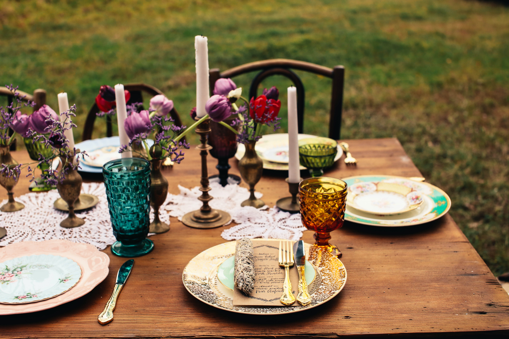
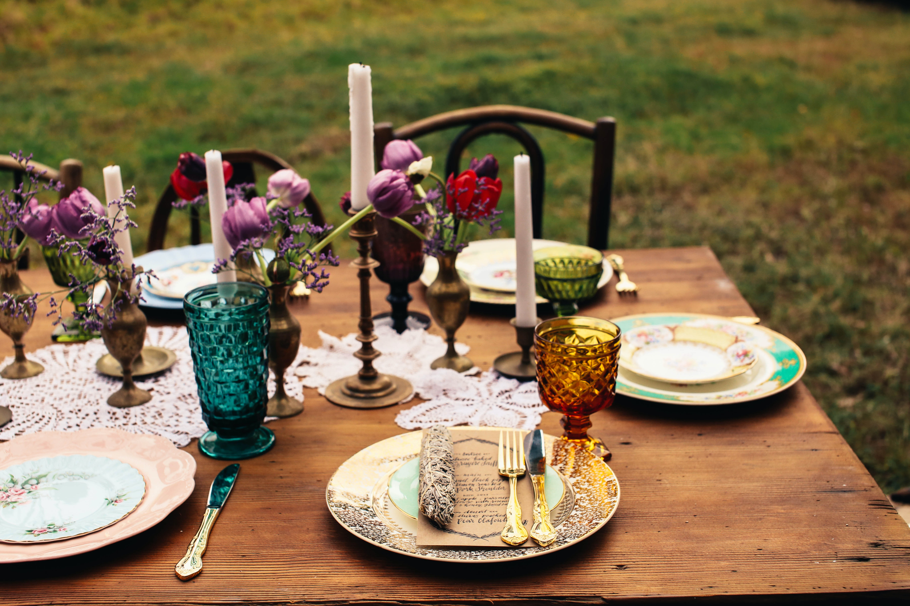

Portfólio


 

Testemunhos
Sofia Lopes
"Último dia de Solteira perfeito"
As ideais chaves não eram fáceis de reunir para um só dia, mas a Cazzulu foi incansável e organizou o programa perfeito. Uma ilha privada, decorada com o tema da festa, animação com um banquete de princesas delicioso. Tudo 10 estrelas! Obrigada pela vossa dedicação e profissionalismo!
Patrice Tomaz
"50 anos de Casados"
Um jantar requintado, acompanhado com vinhos de qualidade. A apresentação dos pratos, o cuidado no servir e os sabores da tradição Alentejana... Divinal! Os nossos convidados foram surpriendidos e nós também. Em nome da família, obrigado Cazzulu.
Helen Smith
"Vegan Cooking Workshop"
We spoke to the boss to help with ideas to celebrate Women's Day. We opted for the private vegan food workshop. It was spectacular, we learned the meson plase, how to cook the food, how to plate, which wine to accompany and as a final touch the perfect dessert. It was wonderful and a memorable afternoon.
FAGs
Existe um número mínimo de pessoas?
Os orçamentos são personalizados e adaptados sempre a pensar no cliente.
Confecionam qualquer tipo de prato?
Sim, os nossos chefes são apaixonados, diversificados e com largos anos de experiência. Antes de avançarmos com o chefe em casa fazemos um breafing com o cliente para que possamos perceber os gostos e preferências.
Deslocam-se a qualquer zona do País?
O Chefe em casa cozinha em Portugal Continental.
Que outros serviços comtemplam?
Organizamos e desenvolvemos para além da preparação e confeção da comida, temos complementos alosivos à decoração, animação, press-kits, prendas de recordação.
Tenho que comprar os alimentos?
O serviço Chefe em casa estão incluidos os serviços: Compras, Pré-confeção, Cozinhar, Servir à mesa e a Limpeza da cozinha.
Pagamentos e Cancelamentos?
O pagamento é feito por transferência bancária. É exigido o pagamento de 75% do valor total do orçamento para reservar a data.
Os restantes 25% são pagos 7 dias antes do evento. Ao cancelar o evento apenas é devolvido 20% do valor pago, independentemente da data em que cancela.